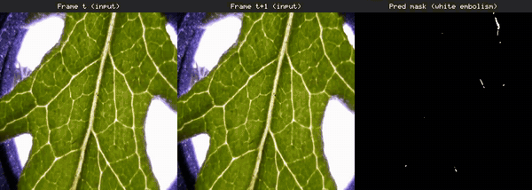
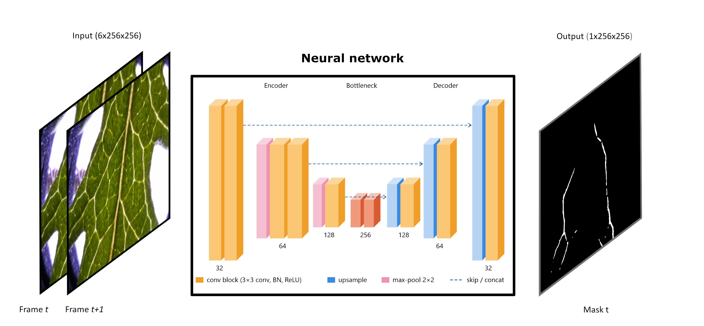

A U-Net receives two consecutive frames of a drying leaf and predicts the pixels that became newly embolised between them. Aggregating these incremental masks over a sequence reconstructs the cumulative embolised area and the vulnerability-curve dynamics. Imaging setup: Cavicam / Raspberry Pi Camera v2 (IMX219), ~5-minute intervals, fixed LED illumination.

Embolism — the formation of air bubbles in a plant's water-transport system — is a mechanistic driver of plant death. The Optical Vulnerability Technique (OVT) is an imaging method for the non-invasive quantification of embolism, including the commonly used drought-vulnerability metric P50, providing detailed spatial and temporal information; its major cost lies in the post-processing of thousands of images. Here we design, train, test, and publicly release a neural-network model that automates the post-processing of OVT images. Using a dataset of 65 leaves from Senecio pterophorus plants dried to 100% embolism, we compare our model's predictions with results obtained via traditional post-processing by an expert. The model resolved P50 to within 0.04 MPa of the expert-processed data, demonstrating its promise for increasing the efficiency and throughput of P50 calculation, although it did not perfectly replicate the pixels constituting the embolism events (mean event-frame IoU of 0.38). We do not propose replacing the semi-automated (expert) pipeline; rather, we leverage expert-processed data to train a neural network that greatly increases the efficiency and throughput of OVT image processing. We invite the community to use our model, and emphasise that care must be taken when considering when and how to apply this and similar approaches to OVT data.